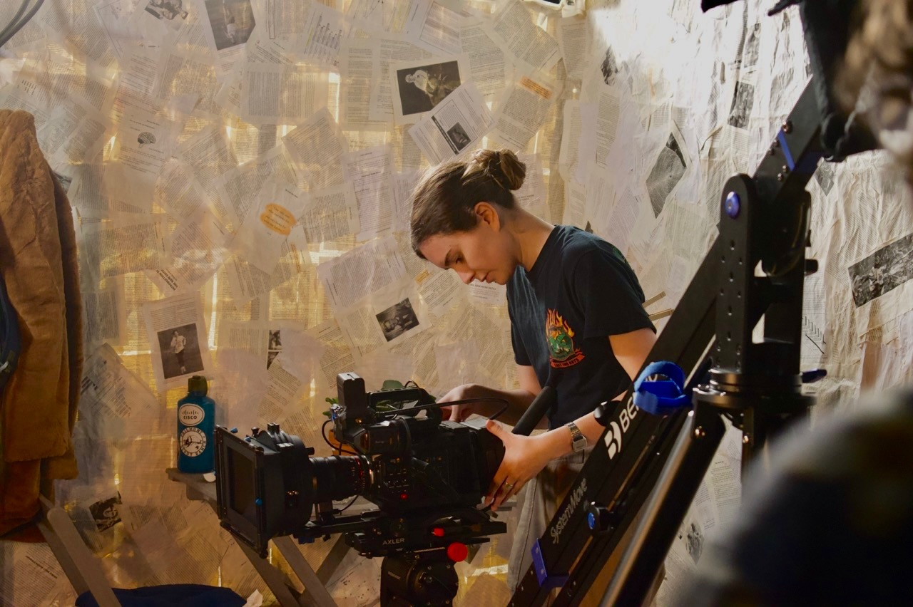

About
Ruby Schweitzer is a filmmaker and graphic designer based in Wilmington, NC. She graduated from UNC Wilmington in 2025 with a Bachelor’s in Film Studies.

Ruby Schweitzer is a filmmaker and graphic designer based in Wilmington, NC. She graduated from UNC Wilmington in 2025 with a Bachelor’s in Film Studies.